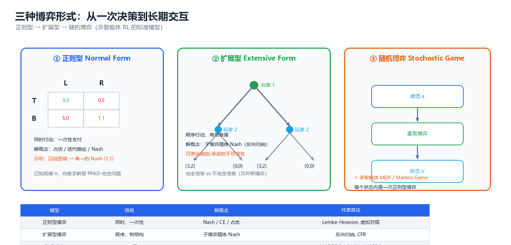
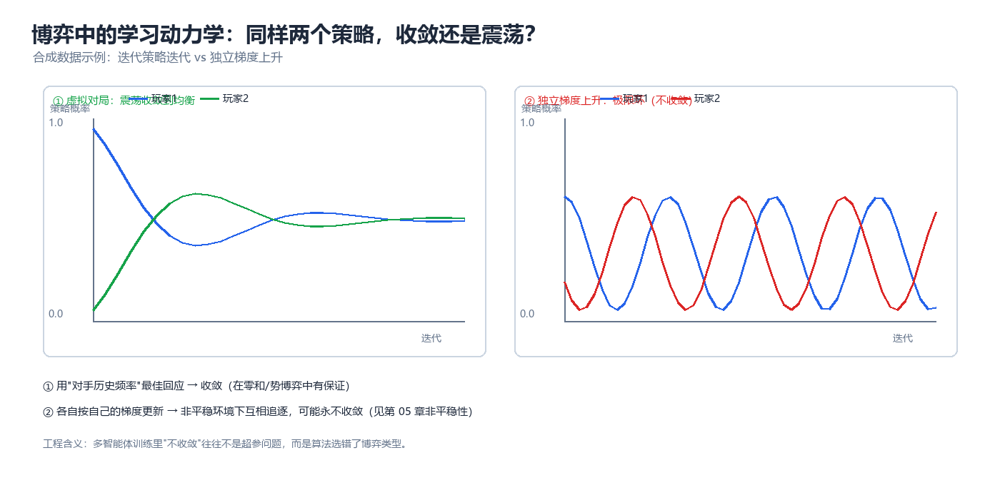

第 03 章 博弈论基础（Game Theory）
多智能体系统的第一个真问题不是"怎么学"，而是"会停在哪里"。博弈论为这个问题提供了完整的语言：形式化（正则型 / 扩展型 / 随机博弈）→ 解概念（占优、纳什、子博弈精炼、贝叶斯、相关、演化稳定）→ 求解算法（支撑枚举、虚拟对局、反向归纳、CFR、Lemke–Howson、梯度法）。本章把这三层打通，并给出可直接运行的代码。读完你应当能做到：拿到一个多主体问题 → 写出它的收益矩阵 → 判断该用哪个解概念 → 估计"独立学习会不会收敛"。这一判断能力，是第 04 章（机制设计）与第 05 章（多智能体强化学习）的共同前置条件。
一、博弈的三种形式化

图：同一场交互的三种视角 —— 正则型看"选择什么"（收益矩阵），扩展型看"何时知道什么"（博弈树 + 信息集），随机博弈看"反复玩下去"（阶段博弈 + 状态转移）。
三种形式化不是三种"流派"，而是三种精度。选择标准只有一句话：把"不得不区分的东西"区分开，其余全部压平 —— 分析一次性同时选择用正则型；分析有先后次序、有观察时序的问题（谁先动、谁看见了什么）用扩展型；分析"状态在变、博弈反复发生"的问题（几乎所有 MARL 场景）用随机博弈。
1.1 正则型博弈（Normal Form Game）
正则型博弈刻画"所有主体同时选择一次"的场景。定义：
- \(N = \{1,\dots,n\}\)：玩家（player，在多智能体语境下就是 agent）集合；
- \(S_i\)：玩家 \(i\) 的策略集（strategy set，也叫纯策略 pure strategy 集）；
- \(S = \prod_{i} S_i\)：策略剖面（strategy profile）的集合，元素记为 \(s = (s_i, s_{-i})\)，其中 \(s_{-i}\) 表示除 \(i\) 以外所有人的选择；
- \(u_i : S \rightarrow \mathbb{R}\)：玩家 \(i\) 的效用/收益函数（utility / payoff）。
\(n = 2\) 且 \(|S_1| = |S_2| = 2\) 时，可以用收益矩阵（payoff matrix）完整表示。以囚徒困境（Prisoner's Dilemma）为例：
列玩家 (Column)
C: 合作 D: 背叛
┌─────────────┬─────────────┐
行玩家 C │ (3, 3) │ (0, 5) │
(Row) ├─────────────┼─────────────┤
D │ (5, 0) │ (1, 1) │
└─────────────┴─────────────┘
括号内 = (行玩家收益, 列玩家收益); 越大的数字越"好"
纯策略 vs 混合策略（mixed strategy）。纯策略是"选一个动作"；混合策略是 \(S_i\) 上的概率分布 \(\sigma_i \in \Delta(S_i)\)，其中 \(\Delta(S_i)\) 是概率单纯形（simplex）：
混合策略的价值不在于"随机化本身"，而在于它把离散的、非凸的选择集变成连续的、凸的集合 —— 纳什存在性定理（见本章 §3.3、§7）正建立于此；工程上，随机的目的是让对手无法通过固定应对来套利（安全博弈、反作弊、拍卖中的应用逻辑，见第 04 章）。
| 概念 | 英文 | 形式记号 | 直觉 | 出现位置 |
|---|---|---|---|---|
| 玩家 | Player / Agent | \(i \in N\) | 独立决策的主体 | 一切模型 |
| 纯策略 | Pure strategy | \(s_i \in S_i\) | 确定的动作选择 | 一次性决策 |
| 混合策略 | Mixed strategy | \(\sigma_i \in \Delta(S_i)\) | 动作上的概率分布 | 均衡存在性、反套利 |
| 策略剖面 | Strategy profile | \(s\) 或 \(\sigma\) | 所有人的选择组合 | 收益函数取值处 |
| 收益/效用 | Payoff / Utility | \(u_i(s)\) | 我关心的数值 | 目标函数 |
| 零和 / 常和 | Zero-/Constant-sum | \(u_1 = -u_2\) 或 \(u_1 + u_2 = c\) | 完全利益冲突（平移等价） | 对抗、竞争定价 |
| 一般和 | General-sum | 无约束 | 既有冲突又有共同利益 | 真实场景默认 |
| 对称博弈 | Symmetric game | \(S_i\) 相同、\(u\) 交换不变 | 同质智能体群体 | 种群训练、ESS |
核心思想：正则型博弈的全部信息压缩在一张收益矩阵里。多智能体系统里绝大多数"算法不收敛"的抱怨，本质是这张矩阵从未被写出来过 —— 一旦写出来，"该不该用混合策略""是否存在占优""是否零和"这三个问题立刻就有答案。
1.2 扩展型博弈与信息集（Extensive Form Game）
当"谁先动、谁看到了什么"会影响结论时，正则型不够用。扩展型博弈用树表示时序与信息：
| 符号 | 名称 | 含义 | 工程对应 |
|---|---|---|---|
| \(H\) | 历史（history）集合 | 从根到各决策点的动作序列 | 交互日志 / trajectory 前缀 |
| \(Z \subset H\) | 终结历史 | 叶子节点，游戏在此结束 | episode 终止状态 |
| \(P : H \setminus Z \rightarrow N\) | 决策者函数 | 该节点由谁行动 | 轮次调度 |
| \(f_c\) | 动作函数 | 每个节点可行动作集 | 合法动作掩码（action mask） |
| \(I_i\) | 信息集（information set） | \(i\) 无法区分的若干节点集合 | 部分可观测（见第 01 章 §2.2） |
| \(u_i : Z \rightarrow \mathbb{R}\) | 叶子收益 | 只在终局结算 | 稀疏奖励 |
信息集是扩展型博弈的灵魂：若每个信息集都是单节点（\(|I_i| = 1\)），称完美信息（perfect information，如棋类）；否则称不完美信息（imperfect information，如扑克、盲拍、带噪声观测的多机器人控制）。策略在这里定义为 \(\sigma_i : I_i \rightarrow \Delta(A(I_i))\) —— 你不能区分的东西，你的策略也无法区别对待，这正是"策略只能是历史的函数"这一部分可观测约束的博弈论表述。
下面是一个典型的两阶段序贯博弈（市场进入威慑，§4.1 会用代码求解它）：
进入者 E (根节点)
┌──────────┴──────────┐
不进 │ │ 进入
▼ ▼
(0, 2) 在位者 I ← 一个单节点信息集
┌─────────┴─────────┐
价格战 │ │ 默许
▼ ▼
(-1, 0) (1, 1)
叶子收益 = (先动者 E 的收益, 后动者 I 的收益)
| 维度 | 正则型博弈 | 扩展型博弈 |
|---|---|---|
| 时间结构 | 同时行动，一次 | 有先后次序，可多轮 |
| 核心数据结构 | 收益矩阵 \(u_i(s)\) | 博弈树 + 信息集 |
| 策略是什么 | \(s_i \in S_i\) | 从信息集到动作的映射（每个信息集都要指定动作） |
| "知道什么" | 隐含全知 | 显式建模（信息集） |
| 解概念 | 纳什均衡 | 子博弈精炼均衡（SPE）、序贯均衡、颤抖手完美 |
| 关键工具 | 不动点、支撑枚举 | 反向归纳（backward induction） |
| 典型算法 | 支撑枚举、Lemke–Howson | 反向归纳、CFR |
| 对应 MARL 设定 | 一次性/无状态博弈 | 序贯决策、回合制（turn-based）环境 |
1.3 随机博弈（Stochastic Game）与 Markov Game
现实中的多主体交互几乎总是"重复发生、状态在变"。随机博弈（Shapley, 1953）把正则型博弈嵌入马尔可夫链：每个状态 \(s\) 上都是一个阶段博弈（stage game），结果是状态转移。
在 MARL 文献中同一对象通常叫 Markov Game：随机博弈传统上强调"每个状态的阶段博弈 + 求均衡"，Markov Game 传统上强调"策略优化 + 值函数"，它们是同一数学对象的两种问法。
┌──────────────────┐ 联合动作 a_t=(a_1,...,a_n) ┌──────────────────┐
│ 状态 s_t 的 │ ────────────────────────────► │ 状态 s_{t+1} 的 │
│ 阶段博弈 G(s_t) │ │ 阶段博弈 G(s_{t+1})│
└──────────────────┘ ◄──────────────────────────── └──────────────────┘
│ │
└──► 立即收益 R_i(s_t, a_t) 按 γ^t 折扣, 下一状态 s_{t+1} ~ P(·|s_t, a_t)
| 解概念 | 定义 | 优点 | 缺点 | 典型场景 |
|---|---|---|---|---|
| 折扣化均衡（discounted equilibrium） | 每个状态上互为最佳回应，对折扣总收益 | 与单智能体 RL 目标一致，可直接值迭代 | 策略依赖折扣因子 \(\gamma\) | 绝大多数 MARL 论文 |
| 平均收益均衡（average-reward equilibrium） | 最优化长期平均收益 | 不依赖 \(\gamma\)，更接近稳态性能 | 收敛分析更难 | 排队、调度、持续对抗 |
| 阶段博弈均衡（stage-game NE） | 每个状态独立求纳什 | 简单、可增量求解 | 忽略未来，可能不是全局均衡 | 短视基线、对手建模 |
均衡值函数满足一个耦合的 Bellman 型方程（\(n\) 个方程互相含有对方的策略）：
\(V_1\) 的递推里出现 \(\pi_2\)，\(V_2\) 的递推里出现 \(\pi_1\) —— 这就是非平稳性（non-stationarity）的数学根源：每个智能体的最优策略都以别人的策略为自变量，一旦别人更新，"环境"就变了。第 05 章从学习算法角度、强化学习第 09 章 §十从算法思维角度展开过这一主题，本节给出的是它的博弈论骨架。
⚠️ 常见误区：把"零和随机博弈"的极小极大解直接套用到一般和问题上。零和下 \(\max\min\) 与均衡等价（von Neumann 定理），一般和下不存在这样的单边优化口径 —— 必须解耦合的最优化问题，或退化为求纳什均衡。
1.4 三者对照表
| 对照项 | 正则型博弈 | 扩展型博弈 | 随机博弈 / Markov Game |
|---|---|---|---|
| 决策时机 | 同时，一次 | 有先后，可多轮 | 反复进行，有限/无限回合 |
| 状态 | 无（或隐式） | 树上的历史 | 显式 \(s \in S\)，可转移 |
| 核心数据结构 | 收益矩阵 \(u_i(s)\) | 博弈树 + 信息集 | \(S, \{A_i\}, P, \{R_i\}, \gamma\) |
| 解概念 | 纳什（含混合） | 子博弈精炼（SPE） | 折扣化/平均收益均衡 |
| 求解算法 | 支撑枚举、Lemke–Howson | 反向归纳、CFR | 值迭代、极小极大 Q、MARL |
| 复杂度 | 存在性总有；求解 PPAD-完全 | 一般和 PSPACE-难 | 一般和 PPAD-难 |
| 不完全信息 | 可扩展为贝叶斯博弈 | 信息集天然表达 | 与 Dec-POMDP 结合最复杂 |
| 典型 MARL 对应 | 一次性竞价/拍卖 | 回合制游戏、谈判协议 | 绝大多数 benchmark（SMAC、PettingZoo） |
| 建模判据 | 无状态、单步决策 | 时序与信息结构是关键变量 | 默认起点（几乎所有学习问题） |
二、占优与迭代删劣
2.1 严格占优与弱占优
"我不管别人怎么做，这个策略都更好" —— 这是博弈论中最强、也最不需要假设的解概念。
| 概念 | 定义 | 记号 | 强度 |
|---|---|---|---|
| 严格占优（strictly dominant） | \(\forall s_{-i}:\ u_i(s_i, s_{-i}) > u_i(s_i', s_{-i})\) | \(s_i \succ s_i'\) | 最强：无论别人怎么做都更好 |
| 弱占优（weakly dominant） | \(\forall s_{-i}:\ \ge\)，且至少一处严格 | \(s_i \succeq s_i'\) | 除平局外都更好 |
| 严格被占优（strictly dominated） | 存在 \(s_i'\) 使上式反向严格成立 | — | 理性主体绝不会选择 |
| 弱被占优（weakly dominated） | 存在 \(s_i'\) 弱占优它 | — | 只在特定信念下会被放弃 |
| 混合占优（mixed dominance） | 被某个混合策略严格占优（而非纯策略） | — | 比纯策略占优更强，常被忽略 |
两点必须强调：(1) 占优是"点对点"的逐项比较，不是"平均更好" —— 平均更好在对手可针对你的场景里没有说服力；(2) 混合占优要多检查一步，一个纯策略可能不被任何纯策略占优，却被某个混合策略严格占优。此外，弱占优的删除会改变均衡集合，严格占优的删除不会 —— 这是 IESDS 只删严格劣策略的原因。
核心思想：占优是唯一不需要对别人做任何假设的解概念 —— 不需要共同知识、不需要别人也聪明。代价是它常常不存在。一旦不存在，就必须引入"我对别人的预期"，于是有了纳什。
2.2 迭代删除严格劣策略（IESDS）
反复删除被严格占优的策略，把策略集合缩小 —— 这就是 IESDS（Iterated Elimination of Strictly Dominated Strategies）。它的合法性来自共同知识理性（common knowledge of rationality）：我知道所有人理性，我知道我知道所有人理性，如此无穷。它最重要的性质是：
下面是一个可被 IESDS 完全求解的 3×3 博弈：
轮次 0 (初始) 轮次 1 (删 2 行) 轮次 2 (删 2 列)
L C R
T (3,2) (2,0) (1,0) T (3,2) (2,0) (1,0) T (3,2)
M (1,1) (1,0) (0,0) ──► (删 M, B: T 逐项更优) ──► (删 C, R: L 逐项更优)
B (0,1) (0,0) (0,0)
↓
唯一存活 (T, L), 收益 (3, 2)
# 迭代删除严格劣策略 (IESDS) —— 3x3 占优可解博弈
import numpy as np
A = np.array([[3, 2, 1], # 行玩家收益矩阵 (行 T,M,B; 列 L,C,R)
[1, 1, 0],
[0, 0, 0]], dtype=float)
B = np.array([[2, 0, 0], # 列玩家收益矩阵
[1, 0, 0],
[1, 0, 0]], dtype=float)
rows = ["T", "M", "B"]
cols = ["L", "C", "R"]
def show(A, B, rows, cols, tag):
print(f" {tag} 行={rows} 列={cols}")
for i, r in enumerate(rows):
print(" " + " ".join(f"({A[i, j]:.0f},{B[i, j]:.0f})" for j in range(len(cols))))
print("=== 初始博弈 ===")
show(A, B, rows, cols, "初始")
for rnd in range(1, 6):
live_r = list(range(len(rows)))
live_c = list(range(len(cols)))
# 1) 行玩家: 找严格被占优的行 (只在当前存活的列上比较)
dom_rows = set()
for i in live_r:
for k in live_r:
if i != k and np.all(A[i, live_c] < A[k, live_c]):
dom_rows.add(i)
print(f"第{rnd}轮: 行 {rows[i]} 被 {rows[k]} 严格占优 -> 删除")
break
if dom_rows:
rows = [r for i, r in enumerate(rows) if i not in dom_rows]
A = np.delete(A, sorted(dom_rows), axis=0)
B = np.delete(B, sorted(dom_rows), axis=0)
show(A, B, rows, cols, "删除后")
continue
# 2) 列玩家: 找严格被占优的列
dom_cols = set()
for j in live_c:
for l in live_c:
if j != l and np.all(B[live_r, j] < B[live_r, l]):
dom_cols.add(j)
print(f"第{rnd}轮: 列 {cols[j]} 被 {cols[l]} 严格占优 -> 删除")
break
if dom_cols:
cols = [c for j, c in enumerate(cols) if j not in dom_cols]
A = np.delete(A, sorted(dom_cols), axis=1)
B = np.delete(B, sorted(dom_cols), axis=1)
show(A, B, rows, cols, "删除后")
continue
print(f"第{rnd}轮: 已无可删除的严格劣策略")
break
print(f"\nIESDS 结果: 唯一存活组合 = 行 {rows[0]} × 列 {cols[0]}"
f" 收益 = ({A[0, 0]:.0f}, {B[0, 0]:.0f})")
# 预期输出:
# === 初始博弈 ===
# 初始 行=['T', 'M', 'B'] 列=['L', 'C', 'R']
# (3,2) (2,0) (1,0)
# (1,1) (1,0) (0,0)
# (0,1) (0,0) (0,0)
# 第1轮: 行 M 被 T 严格占优 -> 删除
# 第1轮: 行 B 被 T 严格占优 -> 删除
# 删除后 行=['T'] 列=['L', 'C', 'R']
# (3,2) (2,0) (1,0)
# 第2轮: 列 C 被 L 严格占优 -> 删除
# 第2轮: 列 R 被 L 严格占优 -> 删除
# 删除后 行=['T'] 列=['L']
# (3,2)
# 第3轮: 已无可删除的严格劣策略
#
# IESDS 结果: 唯一存活组合 = 行 T × 列 L 收益 = (3, 2)
输出的两个细节：(1) 第 1 轮一次性删掉两行，因为行玩家只看列是否存活；(2) 第 3 轮已无可删项，说明这个博弈是占优可解（dominance solvable）的。
2.3 可理性化与占优可解性
IESDS 需要一个"更好"的候选者。若把标准放松为"永远不可能是最佳回应"，就得到更强的删除程序，其不动点叫可理性化（rationalizability，Bernheim 1984 / Pearce 1984）：
| 概念 | 删除规则 | 结果集合 | 大小关系 |
|---|---|---|---|
| ND（不删） | — | \(S\) | 最大 |
| IESDS | \(s_i\) 被某个 \(s_i'\) 严格占优则删 | 占优可解集 \(S^{\text{IESDS}}\) | \(\subseteq S\) |
| 可理性化 | \(s_i\) 在（对手存活集上）从不是最佳回应则删 | 可理性化集 \(R_i\) | \(\subseteq S^{\text{IESDS}}\) |
| 纳什支撑 | 均衡中概率为正的策略集合的并 | \(\text{Supp}(\text{NE})\) | \(\subseteq R_i\)（一般情形） |
反过来不成立：唯一纳什均衡常常不是占优可解 —— 匹配硬币是标准反例（见 §7.4），它有唯一混合均衡，但没有任何纯策略被占优，IESDS 一步都删不动。工程含义：IESDS 是"免费"的（不依赖任何关于对手的假设，可安全用作预处理剪枝），同时也是"弱"的（多数真实博弈处于"什么也删不掉"这一档）。
⚠️ 工程提醒：MARL 中做动作空间剪枝时，只应删除严格（最好用混合策略检查过的严格）劣策略。删除弱劣策略会切掉均衡 —— 典型翻车场景是"按历史平均收益排名删除表现差的动作"，这在非平稳环境里等价于删除均衡支撑。
三、纳什均衡
3.1 混合策略与期望效用
设行玩家混合策略 \(\sigma_1 \in \Delta(S_1)\)、列玩家 \(\sigma_2 \in \Delta(S_2)\)，收益矩阵分别为 \(A = (a_{ij})\)、\(B = (b_{ij})\)，则期望效用（expected utility）为：
这种"双线性（bilinear）"形式是全部计算的起点，有两个直接推论：期望效用对 \(\sigma_1\) 线性，所以一旦确定对手策略，最优选择总可以取在纯策略上（线性函数在单纯形上的极值在顶点取得）；对双方同时非凹，所以"同时优化"不是凸问题 —— 这就是均衡计算困难的根源。
若 \(\sigma_2\) 是纯策略 \(e_j\)，则 \(u_1(\sigma_1, e_j) = \sum_i \sigma_1(i) a_{ij}\)，即"我在对手出 \(j\) 时的加权平均收益"。
3.2 最佳回应与不动点
最佳回应（best response, BR）是博弈论里唯一的基础运算：
纳什均衡（Nash equilibrium, NE）就是一组合法策略互为最佳回应，即最佳回应映射的不动点：
把它画出来，就是本章最该记住的一张图：
最佳回应映射 BR: Δ₁ × Δ₂ ⇉ Δ₁ × Δ₂
┌───────────────────────────────────────────┐
│ │
Δ₁ × Δ₂ │ σ ──────BR──────► σ' │
(策略单纯形积)│ ▲ │ │
│ │ │ │
│ └──── 不动点 σ* ◄──┘ │
│ σ* ∈ BR(σ*) │
└───────────────────────────────────────────┘
BR 是"集值"的(用 ⇉ 表示): 可能一次对应多个最佳回应
-> 不能直接用 Brouwer 不动点, 需要 Kakutani (见 §3.3 / §7)
不动点表述带来三个后果：存在性变成拓扑问题（只需证明映射把凸紧集映入自身且足够连续）、计算变成不动点搜索（Lemke–Howson、虚拟对局都是不动点算法）、稳定性变成动力学问题（学习是否收敛到 \(\sigma^*\)，等价于它是否是"最佳回应动力学"的吸引子，见 §6）。
3.3 纳什存在性（Kakutani 不动点，直觉版）
定理（Nash, 1950）：任何有限博弈（\(|N| < \infty\)，\(|S_i| < \infty\)）在混合策略下至少存在一个纳什均衡。
直觉版证明路线（完整证明见 §7）：
- 构造策略空间 \(\Sigma = \Delta(S_1) \times \cdots \times \Delta(S_n)\)：有限个单纯形之积，因此紧且凸 —— 两个性质都是关键。
- BR 的性质：集值映射 \(BR(\sigma)\) 非空（线性函数在紧集上取到最大值）、凸值（最大化线性函数的解集是凸集）、上半连续（收益连续 ⇒ 最佳回应不会"突变消失"）。
- 套用 Kakutani 定理：紧凸集上的非空凸值上半连续集值自映射必有不动点 ⇒ 存在 \(\sigma^* \in BR(\sigma^*)\)。
- 纯策略均衡不保证存在：这是"混合策略"的全部意义所在（见 §7.4 的反例）。
有限博弈
│ 混合策略把 Δ(S_i) 变成紧凸集
▼
Σ = Δ(S₁)×…×Δ(Sₙ) ——紧、凸——
│ ▲
│ BR 非空、凸值、上半连续
▼ │
BR: Σ ⇉ Σ ──── Kakutani 不动点定理 ────► σ* ∈ BR(σ*)
核心思想：纳什存在性不是"技术细节"，而是整个多智能体分析合法性的地基：它保证"均衡"这个解概念不会空集，从而"分析系统会停在哪里"永远有意义。它也是第 01 章三大核心定理中的定理 1（见 index.md §7.1）。
3.4 计算：支撑枚举求解 2×2 / 2×3 混合均衡
支撑枚举（support enumeration）是小规模精确求解的标准方法：假设均衡的支撑集（support，概率严格为正的策略集合）大小为 \(k\)，则"对手无差异条件"给出一个线性方程组。以 \(|S| = |T| = k\) 为例，列玩家的混合 \(\sigma_2\) 必须让行玩家在 \(S\) 上的所有动作收益完全相等（否则收益最低那个动作的概率应改为 0）：
这是 \((k+1) \times (k+1)\) 的线性系统，解完必须验证两件事：支撑内概率 \(> 0\)，且支撑外动作不构成可获利偏离。这也把"混合均衡 = 无差异条件"这一直觉算法化了。
# 支撑枚举法: 精确求解有限博弈的全部纳什均衡 (含混合)
import itertools
import numpy as np
def support_enumeration(A, B, tol=1e-9):
"""A, B: 行/列玩家的收益矩阵 (m x n). 返回全部 (x, y, u, v)."""
m, n = A.shape
sols = []
for k in range(1, min(m, n) + 1):
for S in itertools.combinations(range(m), k): # 行支撑
for T in itertools.combinations(range(n), k): # 列支撑
# 求 y (列玩家混合) 使行玩家在 S 上无差异: A[S][:,T] y = u
M1 = np.zeros((k + 1, k + 1))
M1[:k, :k] = A[np.ix_(S, T)]
M1[:k, k] = -1.0 # 未知量 [y_T..., u]
M1[k, :k] = 1.0 # sum(y) = 1
b1 = np.zeros(k + 1); b1[k] = 1.0
# 求 x 使列玩家在 T 上无差异 (用转置写成同样的线性系统)
M2 = np.zeros((k + 1, k + 1))
M2[:k, :k] = B[np.ix_(S, T)].T
M2[:k, k] = -1.0 # 未知量 [x_S..., v]
M2[k, :k] = 1.0
b2 = np.zeros(k + 1); b2[k] = 1.0
try:
yT = np.linalg.solve(M1, b1)
xS = np.linalg.solve(M2, b2)
except np.linalg.LinAlgError:
continue # 奇异 -> 无穷多解, 跳过
if np.any(yT[:k] < -tol) or np.any(xS[:k] < -tol):
continue # 支撑内概率必须 >= 0
y = np.zeros(n); y[list(T)] = np.clip(yT[:k], 0, None)
x = np.zeros(m); x[list(S)] = np.clip(xS[:k], 0, None)
x, y = x / x.sum(), y / y.sum()
u, v = x @ A @ y, x @ B @ y
# 验证: 没有任何可获利的偏离
if np.any(A @ y > u + 1e-7) or np.any(x @ B > v + 1e-7):
continue
sols.append((x, y, u, v))
# 去重 (相同解可能来自不同支撑的退化情形)
uniq = []
for s in sols:
if not any(np.allclose(s[0], t[0], atol=1e-6) and
np.allclose(s[1], t[1], atol=1e-6) for t in uniq):
uniq.append(s)
return uniq
def report(name, A, B, row_names, col_names):
print(f"=== {name} ===")
for i in range(len(row_names)):
print(" " + row_names[i] + ": " + " ".join(
f"({A[i, j]:g},{B[i, j]:g})" for j in range(len(col_names))))
print(" 解 (概率按 " + "/".join(row_names) + " 与 " + "/".join(col_names) + " 排列):")
for x, y, u, v in support_enumeration(A, B):
xs = " ".join(f"{v_:.4f}" for v_ in x)
ys = " ".join(f"{v_:.4f}" for v_ in y)
kind = "纯策略" if (x.max() > 1 - 1e-9 and y.max() > 1 - 1e-9) else "混合策略"
print(f" x=[{xs}] y=[{ys}] 期望收益=({u:.4f}, {v:.4f}) [{kind}]")
print()
# 1) 2x2: 性别战 (Battle of the Sexes)
A1 = np.array([[2.0, 0.0], [0.0, 1.0]])
B1 = np.array([[1.0, 0.0], [0.0, 2.0]])
report("2x2 性别战", A1, B1, ["O", "B"], ["O", "B"])
# 2) 2x2: 匹配硬币 (Matching Pennies) —— 零和, 只有唯一混合均衡
A2 = np.array([[1.0, -1.0], [-1.0, 1.0]])
B2 = -A2
report("2x2 匹配硬币 (零和)", A2, B2, ["H", "T"], ["H", "T"])
# 3) 2x3: 行玩家 2 策略, 列玩家 3 策略 (第 3 个动作是严格劣策略)
A3 = np.array([[3.0, 1.0, 0.0],
[1.0, 3.0, 0.0]])
B3 = np.array([[2.0, 0.0, -1.0],
[0.0, 2.0, -1.0]])
report("2x3 非零和", A3, B3, ["U", "D"], ["L", "M", "R"])
# 预期输出:
# === 2x2 性别战 ===
# O: (2,1) (0,0)
# B: (0,0) (1,2)
# 解 (概率按 O/B 与 O/B 排列):
# x=[1.0000 0.0000] y=[1.0000 0.0000] 期望收益=(2.0000, 1.0000) [纯策略]
# x=[0.0000 1.0000] y=[0.0000 1.0000] 期望收益=(1.0000, 2.0000) [纯策略]
# x=[0.6667 0.3333] y=[0.3333 0.6667] 期望收益=(0.6667, 0.6667) [混合策略]
#
# === 2x2 匹配硬币 (零和) ===
# H: (1,-1) (-1,1)
# T: (-1,1) (1,-1)
# 解 (概率按 H/T 与 H/T 排列):
# x=[0.5000 0.5000] y=[0.5000 0.5000] 期望收益=(0.0000, 0.0000) [混合策略]
#
# === 2x3 非零和 ===
# U: (3,2) (1,0) (0,-1)
# D: (1,0) (3,2) (0,-1)
# 解 (概率按 U/D 与 L/M/R 排列):
# x=[1.0000 0.0000] y=[1.0000 0.0000 0.0000] 期望收益=(3.0000, 2.0000) [纯策略]
# x=[0.0000 1.0000] y=[0.0000 1.0000 0.0000] 期望收益=(3.0000, 2.0000) [纯策略]
# x=[0.5000 0.5000] y=[0.5000 0.5000 0.0000] 期望收益=(2.0000, 1.0000) [混合策略]
怎么读这个输出：性别战有 3 个均衡（两个纯均衡 + 混合均衡 \((2/3,1/3)\) vs \((1/3,2/3)\)），而混合均衡收益 \((0.667, 0.667)\) 低于两个纯均衡 —— 这是"均衡不唯一且效率不一"的标准样本，纳什均衡不告诉你"该停在哪一个"（均衡选择问题的来源，也解释了第 05 章自博弈为何会"锁定在某个均衡"）。匹配硬币只有一个混合均衡 \((0.5,0.5)\)；2×3 里 \(R\) 是严格劣策略，混合均衡只在 \(\{L,M\}\) 上，支撑枚举自动恢复了 IESDS 的结论。注意其组合复杂度 \(\sum_k \binom{m}{k}\binom{n}{k}\) 是指数级，\(m=n=10\) 已不现实 —— 这正是 §5 各种多项式/启发式算法的用武之地。
四、其他解概念
图：解概念地图 —— 从最强的占优均衡到最弱的相关均衡，越往下"存在性越好、计算越容易"，但"预测力越弱"。
纳什均衡是中心，但不是唯一。选择解概念的标准是你能付得起多少假设：假设越强，解越精确但越容易不存在；假设越弱，解越容易存在但预测力越弱。
4.1 子博弈精炼与反向归纳（Backward Induction）
纳什均衡允许不可信威胁（non-credible threat）：对手声称"你若进入我就打价格战"，即使真打起来对方自己亏更多。子博弈精炼均衡（subgame perfect equilibrium, SPE）要求"在每一个子博弈上也必须是纳什均衡"，从而排除这类威胁。求解方法是反向归纳（backward induction）：从叶子向根逐层求解，每个决策节点选择收益最大的动作。其合法性来自动态规划原则 —— 后一段的最优选择与前面怎么走到这里无关。
# 扩展型博弈 + 反向归纳 (Backward Induction): 市场进入威慑
# 树用嵌套 dict 表示; "idx" 是该决策者在收益元组中的下标
tree = {
"player": "进入者 E", "idx": 0,
"actions": {
"不进 (Out)": (0.0, 2.0), # 叶节点: (E 收益, 在位者 I 收益)
"进入 (In)": {
"player": "在位者 I", "idx": 1,
"actions": {
"打价格战 (Fight)": (-1.0, 0.0), # 双方都受损
"默许 (Accommodate)": (1.0, 1.0), # 和平共处
},
},
},
}
def backward_induction(node, depth=0):
"""自底向上求子博弈精炼均衡: 返回 (该子树的均衡收益向量, 最优动作链)"""
if not isinstance(node, dict): # 叶节点 -> 直接是收益向量
return node, []
best_val, best_act, best_chain = None, None, []
for act, child in node["actions"].items():
val, chain = backward_induction(child, depth + 1)
if best_val is None or val[node["idx"]] > best_val[node["idx"]]:
best_val, best_act, best_chain = val, act, chain
print(" " * depth + f"[{node['player']}] 理性选择 {best_act} -> 收益 {best_val}")
return best_val, [best_act] + best_chain
print("=== 反向归纳求解过程 (自底向上) ===")
eq_val, path = backward_induction(tree)
print("\n=== 结果 ===")
print("子博弈精炼均衡路径: " + " -> ".join(path))
print(f"均衡收益 (E, I) = {eq_val}")
print("\n对比: 若 E 相信 I 会『真的』打价格战 (-1, 0), E 会选『不进』得 0;")
print(" 但 I 在『进入』子博弈里理性地选默许 (1 > 0), 所以威胁不可信。")
# 预期输出:
# === 反向归纳求解过程 (自底向上) ===
# [在位者 I] 理性选择 默许 (Accommodate) -> 收益 (1.0, 1.0)
# [进入者 E] 理性选择 进入 (In) -> 收益 (1.0, 1.0)
#
# === 结果 ===
# 子博弈精炼均衡路径: 进入 (In) -> 默许 (Accommodate)
# 均衡收益 (E, I) = (1.0, 1.0)
#
# 对比: 若 E 相信 I 会『真的』打价格战 (-1, 0), E 会选『不进』得 0;
# 但 I 在『进入』子博弈里理性地选默许 (1 > 0), 所以威胁不可信。
| 维度 | 纳什均衡 | 子博弈精炼均衡 |
|---|---|---|
| 要求 | 整体上没人愿偏离 | 每个子博弈内部也没人愿偏离 |
| 是否排除不可信威胁 | 否 | 是 |
| 求解方法 | 不动点 / LP / 支撑枚举 | 反向归纳（完美信息博弈必然可解） |
| 存在性 | 有限博弈必存在 | 完美信息有限博弈必存在（Zermelo） |
| 复杂度 | PPAD-完全 | 完美信息下多项式 |
| MARL 对应 | 同时行动的自博弈 | 回合制游戏、树搜索（AlphaZero 类自博弈） |
| 陷阱 | 可能有不可信威胁均衡 | 不完美信息下需"序贯均衡/颤抖手完美"加强 |
⚠️ 反向归纳有一处著名争议：蜈蚣博弈（centipede game）中反向归纳预测"第一步就结束"，而实验里人类常合作到很深。这说明共同知识理性是强假设。工程结论是：不要假设对手完全理性，而要显式建模对手（对手建模、种群训练、策略池）—— 这也解释了 CFR 这类"不需要理性假设的迭代算法"（§5.2）为何在实战中大受欢迎。
4.2 贝叶斯博弈与不完全信息
前面假设"收益矩阵是共同知识"。当收益或类型是私有信息时（我不知道你的成本、偏好、是否有备用电源），用贝叶斯博弈（Bayesian game，Harsanyi 1967–68）：
其中 \(\theta_i \in \Theta_i\) 是玩家 \(i\) 的类型（type，刻画其私有信息），\(p\) 是类型的共同先验分布。Harsanyi 的关键洞察：把"不完全信息"转成"自然先选类型 + 完全信息博弈"（Harsanyi 转换），于是所有工具继续可用，只是策略变成"从类型到动作的映射" \(\sigma_i(\theta_i)\)。
贝叶斯纳什均衡（Bayesian Nash equilibrium, BNE）：
| 维度 | 完全信息博弈 | 贝叶斯（不完全信息）博弈 |
|---|---|---|
| 共同知识 | 收益矩阵、动作集 | 只有类型分布 \(p(\theta)\) |
| 私有信息 | 无 | 类型 \(\theta_i\) |
| 策略形式 | \(\sigma_i \in \Delta(A_i)\) | \(\sigma_i(\cdot \mid \theta_i)\)：类型 → 动作 |
| 均衡概念 | 纳什均衡 | 贝叶斯纳什均衡（BNE） |
| 关键运算 | 最佳回应 | 对后验分布的期望最佳回应 |
| 典型场景 | 规则完全透明 | 拍卖（估值私有）、谈判（底价私有）、安全博弈 |
| MARL 对应 | 共享状态的多智能体 | 私有观测 + 隐式类型推断 |
对 MARL 的直接启示："私有信息 + 先验"就是对手建模（opponent modeling）的形式化。当你说"我的智能体需要推测对手的意图/类型"时，你其实在做贝叶斯推断：从对手历史动作更新对 \(\theta_{-i}\) 的后验，再对后验做最佳回应。第 05 章的自博弈与种群训练、第 06 章的通信（把私有类型变成可分享的信息）都可看作这一结构的工程化近似。
4.3 相关均衡（Correlated Equilibrium）
纳什均衡要求随机化是独立的。如果存在一个可信的第三方 / 公共随机信号，允许玩家之间相关随机化，就得到相关均衡（Aumann, 1974）：仲裁者按公开分布 \(p\) 抽取建议组合 \(s \sim p\)，私下告诉每个玩家 \(s_i\)；每个玩家收到建议后没有任何偏离的动机：
这组线性不等式（加上 \(p \ge 0\)、\(\sum p = 1\)）构成一个凸多面体 —— 于是"求相关均衡"是线性规划（LP），多项式时间可解；而"求纳什均衡"是 PPAD-完全。这是解概念地图上最重要的一处"用假设换计算"的交换。
# 相关均衡 (Correlated Equilibrium) 的线性约束 + 顶点枚举
# 只用 numpy: CE 可行集是凸多面体, 线性目标的最优值必在顶点取得,
# 因此枚举"3 个不等式约束取等号 + 概率和为 1"的全部交点即可。
import itertools
import numpy as np
A = np.array([[2.0, 0.0], [0.0, 1.0]]) # 性别战: 行玩家收益
B = np.array([[1.0, 0.0], [0.0, 2.0]]) # 性别战: 列玩家收益
m, n = A.shape
def ce_constraints(A, B):
"""返回 CE 的全部线性不等式系数 (M, b), 形式 M @ p <= b (此处 b = 0)"""
rows = []
for i in range(m): # 行玩家: 不想从 i 偏到 k
for k in range(m):
if i != k:
coef = np.zeros((m, n))
for j in range(n):
coef[i, j] = A[k, j] - A[i, j]
rows.append(coef.ravel())
for j in range(n): # 列玩家: 不想从 j 偏到 l
for l in range(n):
if j != l:
coef = np.zeros((m, n))
for i in range(m):
coef[i, j] = B[i, l] - B[i, j]
rows.append(coef.ravel())
return np.array(rows), np.zeros(len(rows))
M, b = ce_constraints(A, B)
print(f"CE 的偏离激励约束条数 = {M.shape[0]}, 概率变量数 = {m * n}\n")
def is_ce(p, tol=1e-9):
"""检查分布 p (m x n) 是否满足全部激励相容不等式与标准化"""
return (np.abs(p.sum() - 1) < tol and np.all(p > -tol)
and np.all(M @ p.ravel() <= tol))
print("检查纯策略均衡 (O,O) 是 CE ?", is_ce(np.array([[1, 0], [0, 0]], float)))
mn = np.array([[2 / 3 * 1 / 3, 2 / 3 * 2 / 3], # 混合纳什: x=(2/3,1/3), y=(1/3,2/3)
[1 / 3 * 1 / 3, 1 / 3 * 2 / 3]])
print("检查混合纳什均衡 是 CE ?", is_ce(mn))
corr = np.array([[0.5, 0.0], [0.0, 0.5]]) # 抛公平硬币: 同时建议 (O,O) 或 (B,B)
print("检查『抛硬币协调』分布 是 CE ?", is_ce(corr))
print("它是乘积分布吗? ", bool(abs(corr[0, 0] * corr[1, 1] - corr[0, 1] * corr[1, 0]) < 1e-12),
" -> 乘积分布才对应纳什均衡\n")
# ---- 顶点枚举: 穷举 CE 多面体的极点 (线性目标最优值必落在顶点) ----
ineq = np.vstack([M, -np.eye(m * n)]) # 再加 p >= 0 约束
verts = []
for combo in itertools.combinations(range(len(ineq)), 3): # 4 个未知量: 3 约束 + 1 等式
S = np.vstack([ineq[list(combo)], np.ones((1, m * n))])
if abs(np.linalg.det(S)) < 1e-12:
continue
p = np.linalg.solve(S, np.array([0, 0, 0, 1.0]))
if is_ce(p, 1e-9):
verts.append(p)
uniq = []
for p in verts: # 去重
if not any(np.allclose(p, q, atol=1e-7) for q in uniq):
uniq.append(p)
print(f"CE 多面体顶点数 = {len(uniq)}")
for p in uniq:
P = p.reshape(m, n)
u, v = (P * A).sum(), (P * B).sum()
is_product = abs(P[0, 0] * P[1, 1] - P[0, 1] * P[1, 0]) < 1e-9
tag = "乘积分布(=纳什)" if is_product else "非乘积(纯相关, 非纳什)"
print(f" p={np.round(P, 4).tolist()} 期望收益=({u:.4f}, {v:.4f}) {tag}")
print("\n结论: 相关均衡集合严格大于纳什均衡集合 —— 存在 CE 但非 NE 的分布,")
print(" 这正是引入『可信第三方信号/仲裁者』的数学依据。")
# 预期输出:
# CE 的偏离激励约束条数 = 4, 概率变量数 = 4
#
# 检查纯策略均衡 (O,O) 是 CE ? True
# 检查混合纳什均衡 是 CE ? True
# 检查『抛硬币协调』分布 是 CE ? True
# 它是乘积分布吗? False -> 乘积分布才对应纳什均衡
#
# CE 多面体顶点数 = 5
# p=[[0.2222, 0.4444], [0.1111, 0.2222]] 期望收益=(0.6667, 0.6667) 乘积分布(=纳什)
# p=[[-0.0, 0.0], [0.0, 1.0]] 期望收益=(1.0000, 2.0000) 乘积分布(=纳什)
# p=[[0.25, 0.5], [-0.0, 0.25]] 期望收益=(0.7500, 0.7500) 非乘积(纯相关, 非纳什)
# p=[[0.4, -0.0], [0.2, 0.4]] 期望收益=(1.2000, 1.2000) 非乘积(纯相关, 非纳什)
# p=[[1.0, 0.0], [0.0, -0.0]] 期望收益=(2.0000, 1.0000) 乘积分布(=纳什)
#
# 结论: 相关均衡集合严格大于纳什均衡集合 —— 存在 CE 但非 NE 的分布,
# 这正是引入『可信第三方信号/仲裁者』的数学依据。
📌 关于求解器：本例刻意只用
numpy（scipy未安装时也能跑）。若环境有scipy.optimize.linprog，标准做法是直接解 LP（在"\(u_j \ge u_j^{\text{NE}}\)"约束下最大化某个 \(u_i\)）。顶点枚举只适用于变量极少（\(mn \lesssim 4\)）的情形，规模一大就必须用 LP/内点法。
输出说明三件事：(1) 纳什均衡 ⊆ 相关均衡（前两个检查都是 True）；(2) 顶点 \((0.75,0.75)\)、\((1.20,1.20)\) 处的分布不是乘积分布，因此不对应任何纳什均衡 —— 这就是相关均衡"多出来的东西"；(3) 这两个纯相关均衡的收益高于混合纳什均衡的 \((0.667,0.667)\)，即信号协调能提升效率。这是机制设计里"引入仲裁者/平台/可信第三方"的数学依据（第 04 章）。
| 维度 | 纳什均衡 | 相关均衡 |
|---|---|---|
| 随机化结构 | 各玩家独立随机的乘积分布 | 存在任意相关的公共分布 \(p\) |
| 定义方式 | 不动点 \(\sigma^* \in BR(\sigma^*)\) | 一组线性不等式 |
| 几何形状 | 一般非凸、离散点集 | 凸多面体 |
| 存在性 | 有限博弈必存在 | 总存在（凸紧集非空） |
| 计算复杂度 | PPAD-完全 | 多项式（LP） |
| 是否总包含纳什 | — | 是（NE 是特殊情形） |
| 效率 | 可能很低（如混合均衡） | 可达到比所有 NE 更高的共同收益 |
| 实现要求 | 无 | 需要一个可信的公开信号源 |
| 典型应用 | 自博弈均衡 | 交通协调、平台调度、协议标准 |
4.4 演化稳定策略（ESS）
前面的解概念都假设"玩家是理性最大化者"。演化稳定策略（evolutionarily stable strategy, ESS，Maynard Smith & Price 1973）换一个假设：策略通过复制/模仿传播，适应度高的策略占比变大。定义（\(x\) 为主流策略，\(y\) 为入侵变异）：
第一条件是"对入侵者的直接优势"，第二条件是"平局时的稳定性（二次打击条件）"。ESS 是动态稳定性概念：它保证小扰动下会被拉回。标准动力学是复制子动力学（replicator dynamics，Taylor & Jonker 1978）：
即"增长率 ∝ 该策略相对平均水平的超额收益"。这与强化学习中的交叉学习、策略梯度在多智能体下的某些特例在形式上是同源的 —— 这是"演化博弈论"与"MARL"之间最重要的桥梁。
# 演化稳定策略 (ESS): 鹰鸽博弈的复制子动力学收敛到内部混合均衡 V/C
import numpy as np
V, C = 2.0, 4.0 # 资源价值 V, 打斗代价 C (C > V 时存在内部 ESS)
# 行 = 我的策略, 列 = 对手策略; 收益顺序为 (鹰, 鸽)
M = np.array([[(V - C) / 2, V], # 我出鹰: 遇鹰平分净损, 遇鸽独得资源
[0.0, V / 2]]) # 我出鸽: 遇鹰退让得 0, 遇鸽平分
print(f"鹰鸽博弈支付矩阵 (V={V:g}, C={C:g}): 鹰 vs 鹰 = {(V - C) / 2:g}, "
f"鹰 vs 鸽 = {V:g}, 鸽 vs 鸽 = {V / 2:g}")
print(f"理论内部 ESS = V/C = {V / C:.4f} (鹰的比例)\n")
def payoffs(p):
"""对手以 p = (鹰比例, 鸽比例) 出招时, 鹰/鸽两种策略的期望收益"""
return M @ p
for start in (0.02, 0.98):
p = start
traj = []
for _ in range(1000):
u = payoffs(np.array([p, 1 - p]))
avg = p * u[0] + (1 - p) * u[1]
p = p * (1.0 + 0.05 * (u[0] - avg)) # 复制子动力学 (离散版)
p = p / (p + (1 - p) * (1.0 + 0.05 * (u[1] - avg))) if p > 0 else 0.0
traj.append(p)
print(f"起点 鹰比例 = {start:<5g} -> 1000 步后 = {traj[-1]:.4f} "
f"(|p - V/C| = {abs(traj[-1] - V / C):.5f})")
for k in (0, 49, 999):
print(f" 第 {k + 1:>4d} 步: 鹰比例 = {traj[k]:.4f}")
print("\n结论: 内部 ESS 处两种策略收益相等, 任何偏离都被拉回 -> 演化稳定。")
# 预期输出:
# 鹰鸽博弈支付矩阵 (V=2, C=4): 鹰 vs 鹰 = -1, 鹰 vs 鸽 = 2, 鸽 vs 鸽 = 1
# 理论内部 ESS = V/C = 0.5000 (鹰的比例)
#
# 起点 鹰比例 = 0.02 -> 1000 步后 = 0.5000 (|p - V/C| = 0.00000)
# 第 1 步: 鹰比例 = 0.0210
# 第 50 步: 鹰比例 = 0.1624
# 第 1000 步: 鹰比例 = 0.5000
# 起点 鹰比例 = 0.98 -> 1000 步后 = 0.5000 (|p - V/C| = 0.00000)
# 第 1 步: 鹰比例 = 0.9781
# 第 50 步: 鹰比例 = 0.6622
# 第 1000 步: 鹰比例 = 0.5000
#
# 结论: 内部 ESS 处两种策略收益相等, 任何偏离都被拉回 -> 演化稳定。
输出与理论完全一致：从 2% 鹰和 98% 鹰两个极端出发都收敛到 \(V/C = 0.5\)（|p - V/C| = 0.00000），说明内部混合均衡是渐近稳定的。注意这里的"混合均衡"可解释为种群中策略的比例（个体仍用纯策略），这是 ESS 与纳什的哲学差别：前者是"种群比例"，后者是"个体随机化"，两者在 2 策略对称博弈里数值相同。
| 维度 | 纳什均衡 | 演化稳定策略（ESS） |
|---|---|---|
| 主体 | 完全理性的决策者 | 种群中被复制/模仿的策略 |
| 均衡是什么 | 策略组合 | 种群比例分布（或该主体策略） |
| 稳定性来源 | 无人愿偏离（一次性比较） | 小扰动后被动力学拉回 |
| 动力学 | 无内禀动力学 | 复制子动力学 |
| 关系 | ESS ⇒ 纳什均衡（对称博弈）；反之不成立 | 存在 NE 但非 ESS 的情形 |
| MARL 对应 | 策略梯度/自博弈的收敛点 | 种群训练、进化算法、PSRO |
| 工程价值 | 描述"停在哪" | 描述"能否守住""是否抗种群入侵" |
核心思想：纳什均衡是静态的（一次比较，"不想动"），ESS 是动态的（被推开后会回来）。工程上你几乎总要问后者：训练出的策略在对手换人、参数漂移、噪声扰动下还能不能守住？这就是 PSRO/种群训练（第 05 章）与鲁棒性评估（第 09 章）的动机。
4.5 解概念关系总表
| 解概念 | 英文 | 核心假设 | 存在性 | 计算复杂度 | 与纳什的关系 | 典型用途 |
|---|---|---|---|---|---|---|
| 占优均衡 | Dominant strategy EQ | 无需假设对手 | 极少存在 | 多项式 | \(\subseteq\) NE | 真实性机制（VCG） |
| IESDS 结果 | Dominance solvable set | 共同知识理性 | 可为空 | 多项式 | 若单点则 = NE | 动作空间剪枝 |
| 可理性化 | Rationalizability | 迭代最佳回应 | 非空（有限博弈） | 多项式 | \(\supseteq\) NE 支撑 | 策略空间界定 |
| 纳什均衡 | Nash equilibrium | 理性 + 共同知识 | 有限博弈必存在（混合） | PPAD-完全 | 基准 | 分析/学习目标 |
| 子博弈精炼 | Subgame perfect EQ | 完全信息 + 序贯理性 | 完美信息有限博弈必存在 | 完美信息多项式 | \(\subseteq\) NE | 序贯决策、树搜索 |
| 序贯均衡 | Sequential equilibrium | 不完美信息 + 一致性 | 有限博弈必存在 | PSPACE-难 | \(\subseteq\) NE | 扑克、谈判 |
| 贝叶斯纳什 | Bayesian Nash EQ | 类型先验共同知识 | 有限类型游戏必存在 | 困难（类型爆炸） | 完全信息下退化为 NE | 拍卖、对手建模 |
| 相关均衡 | Correlated equilibrium | 存在可信公共信号 | 总存在 | 多项式（LP） | \(\supseteq\) NE | 协调平台、协议 |
| 演化稳定策略 | ESS | 复制/模仿动力学 | 不保证存在 | 一般困难 | \(\subseteq\) NE（对称） | 种群、鲁棒性 |
| 社会最优 | Social optimum | 存在中心协调者 | 总存在 | 一般 NP-难 | 与 NE 无包含关系 | 效率上界 |
而社会最优与纳什之间没有包含关系：这是囚徒困境（NE 差于社会最优）与"低效强制协调"（强制均衡差于自由 NE）的共同来源，也是第 04 章全部动机的起点。
五、均衡求解算法全景
所有算法都在回答同一个问题：怎么找到不动点（或不动的性质）。选择算法的第一问不是"哪个最快"，而是"这个博弈属于哪一类"。
5.1 虚拟对局与最佳回应动力学
虚拟对局（fictitious play, Brown 1951）是最古老也最直观的均衡学习算法：每个玩家维护"对手历史动作的经验频率"估计，每轮对经验频率做最佳回应（best response to empirical frequencies），重复并观测经验频率是否收敛到均衡。
| 博弈类型 | 虚拟对局的收敛性 | 依据 |
|---|---|---|
| 两人零和 | 收敛到均衡 | Robinson (1951) |
| 两人 \(2 \times N\) | 收敛 | Berger (2005) 等 |
| 势博弈（potential game） | 收敛（势函数单调） | Monderer & Shapley (1996) |
| 一般和有限博弈 | 可能周期震荡、不收敛 | Shapley (1964) 的 3×3 反例 |
| 零和连续博弈 | 平均意义下收敛 | 连续时间版本 |
# 虚拟对局 (Fictitious Play): 每个玩家对"对手的经验频率"做最佳回应
import numpy as np
def fictitious_play(A, B, T, seed=0):
rng = np.random.default_rng(seed)
m, n = A.shape
cnt_r, cnt_c = np.ones(m), np.ones(n) # 统计各自"出过的动作"次数 (先验 +1)
hist = []
for _ in range(T):
x, y = cnt_r / cnt_r.sum(), cnt_c / cnt_c.sum() # 对手经验频率的估计
# 最佳回应 (并列时随机选一个, 模拟真实学习中的抖动)
bi = rng.choice(np.flatnonzero(np.isclose(A @ y, (A @ y).max())))
bj = rng.choice(np.flatnonzero(np.isclose(B.T @ x, (B.T @ x).max())))
cnt_r[bi] += 1
cnt_c[bj] += 1
hist.append((cnt_r / cnt_r.sum(), cnt_c / cnt_c.sum()))
return hist
T = 2000
games = [("匹配硬币 (零和, 均衡 1/2)", np.array([[1.0, -1.0], [-1.0, 1.0]])),
("石头剪刀布 (零和, 均衡 1/3)",
np.array([[0.0, -1.0, 1.0], [1.0, 0.0, -1.0], [-1.0, 1.0, 0.0]]))]
for name, M in games:
k = len(M)
hist = fictitious_play(M, -M, T, seed=7)
head = " ".join(f"{'P(' + str(i + 1) + ')':>9}" for i in range(k))
print(f"=== {name}: 虚拟对局, 行玩家经验频率 (理论值 = {1 / k:.4f}) ===")
print(f"{'迭代 t':>8} {head} 最大偏离")
for t in (10, 100, 1000, 2000):
x, _ = hist[t - 1]
vals = " ".join(f"{v:>9.4f}" for v in x)
print(f"{t:>8} {vals} {np.abs(x - 1 / k).max():>8.4f}")
# 预期输出:
# === 匹配硬币 (零和, 均衡 1/2): 虚拟对局, 行玩家经验频率 (理论值 = 0.5000) ===
# 迭代 t P(1) P(2) 最大偏离
# 10 0.6667 0.3333 0.1667
# 100 0.4902 0.5098 0.0098
# 1000 0.4840 0.5160 0.0160
# 2000 0.4865 0.5135 0.0135
# === 石头剪刀布 (零和, 均衡 1/3): 虚拟对局, 行玩家经验频率 (理论值 = 0.3333) ===
# 迭代 t P(1) P(2) P(3) 最大偏离
# 10 0.4615 0.3077 0.2308 0.1282
# 100 0.3883 0.3107 0.3010 0.0550
# 1000 0.3101 0.3539 0.3360 0.0233
# 2000 0.3330 0.3155 0.3515 0.0181
读法：匹配硬币的经验频率从 0.667 逐步逼近 0.5（2000 步后最大偏离 0.0135），与"零和博弈虚拟对局收敛"（Robinson 1951）一致。石头剪刀布同样在收敛，但慢得多且波动明显（0.128 → 0.018），因为最佳回应在三个动作间循环。
⚠️ 不要把这个结论外推：虚拟对局在一般和博弈中不保证收敛（Shapley 1964 反例）。同一个算法换一个博弈类型，结论就从"收敛"变成"震荡" —— 这正是 §6 的主题。
5.2 逆序归纳与 CFR
反向归纳（§4.1）适用于完美信息；对不完美信息（如扑克）要换成 CFR（counterfactual regret minimization，Zinkevich et al. 2007）。核心洞见：不直接求均衡，而是最小化每个信息集上的"遗憾"（regret）——"如果当初一直用某个动作，能多赚多少"：
- 反事实遗憾：在"我到达这个信息集的概率"加权下，动作 \(a\) 相对当前策略的超额收益；
- 遗憾匹配（regret matching）：下一轮策略 \(\propto \max(R_i^a, 0)\)，把概率分配给曾经后悔没用的动作；
- 收敛保证（零和）：平均策略遗憾以 \(O(1/\sqrt{T})\) 趋于零 ⇒ 平均策略收敛到纳什均衡：
| 对比项 | 反向归纳 | CFR |
|---|---|---|
| 适用信息结构 | 完美信息 | 不完美信息（信息集） |
| 求解对象 | 子博弈精炼均衡（精确） | 平均策略逼近纳什均衡（近似） |
| 计算量 | 与树规模线性 | 与树规模 × 迭代数线性 |
| 是否需要理性假设 | 需要（共同知识理性） | 不需要（对任意对手都降低遗憾） |
| 实际应用 | 棋类搜索、回合制游戏 | 德州扑克（Libratus、Pluribus） |
| 与 MARL 的关系 | 树搜索式自博弈 | 自博弈 + 遗憾最小化的工程范式 |
| 主要局限 | 大规模不完美信息下不可行 | 收敛慢，需抽象（abstraction） |
CFR 对第 05 章的启示："降低遗憾"比"最大化收益"在对抗环境中更稳健 —— 因为"最小化最大遗憾"直接对应零和的极小极大目标，而"最大化期望收益"在与非平稳对手交互时是在追逐一个移动目标。
5.3 Lemke–Howson 思路
对一般（非零和）两方博弈，Lemke–Howson（1964）是最经典的组合算法：把均衡写成标注（label）问题（两侧标注恰好互补覆盖全部标签 ⇔ 均衡），在"策略单纯形之积"上定义带标签的多面体 \(P = \{(x,y) \ge 0 : x^\top B \le 1,\ A y \le 1\}\)，再从一个人工"全标注"顶点出发，沿"只差两个标签的边"做互补枢轴（complementary pivoting），路径终点给出一个完全标注点 = 一个纳什均衡。
起点(人工顶点) 沿着"缺两个标签的边"走
┌───────────┐ ┌───────────┐ ┌───────────┐ ┌───────────┐
│ 标签 {1,2}│──► │ 标签 {1,4} │──► │ 标签 {3,4} │ ── ... ─►│ 完全标注 │
└───────────┘ └───────────┘ └───────────┘ │ = 纳什均衡 │
▲ └───────────┘
└── 每次枢轴只换一个标签 (与单纯形法同一套字典操作)
| 性质 | 说明 | 工程含义 |
|---|---|---|
| 找到什么 | 恰好一个均衡（不是全部） | 无法用来枚举均衡集合 |
| 复杂度 | 最坏指数（同单纯形法），实际快 | 小规模可用，大规模不可行 |
| 理论地位 | 单方博弈是"路径跟随 = 存在性证明" | 帮助理解 PPAD-完全 |
| 解的路径依赖 | 起点不同结果可能不同 | 换起点可能找到不同均衡 |
| 退化（degeneracy） | 需字典序/符号扰动 | 实现细节多 |
| 替代方案 | 支撑枚举、同伦延拓、进化式搜索 | 工程上常选后者 |
核心思想：PPAD-完全（Daskalakis, Goldberg & Papadimitriou 2006）告诉我们的不是"别做了"，而是"精确求一般和博弈的均衡是本性困难的"。于是工程实践转向三类替代：小规模用枚举、大规模用学习/近似（虚拟对局、MARL 自博弈）、需要可控性时用相关均衡的 LP。
5.4 连续博弈的梯度方法
动作空间连续时（连续竞价、连续控制、GAN 式对抗），均衡用梯度动力学求解：每个玩家沿自己收益的梯度上升，\(\dot{x}_i = \nabla_{x_i} u_i(x)\)。关键负面事实：零和博弈中同时梯度上升通常不收敛，而是进入旋转轨道 —— 因为博弈的梯度场不是某个全局势函数的梯度（不可积），只有哈密顿结构。Balduzzi et al. (2018)《The Mechanics of n-Player Differentiable Games》系统化了这一观察：
| 方法 | 思路 | 适用 | 代价 |
|---|---|---|---|
| 同时梯度上升（SGA） | 各自沿自己的梯度走 | 势博弈（可收敛） | 零和/一般和下常震荡 |
| 交替更新（alternating） | 轮流更新一方 | 部分双线性博弈可收敛 | 对时序敏感、易锁定 |
| 辛梯度调整（symplectic） | 修正到哈密顿方向 | 零和/对抗 | 需 Hessian 或近似 |
| 正则化 / 乐观（optimistic） | 加熵或"乐观项" | 收敛性更好 | 引入新超参 |
| 外推（extragradient） | 两步外推 | 凸凹零和保证收敛 | 每步两次梯度 |
如果博弈是势博弈（存在 \(\Phi\) 使每个玩家的收益差等于 \(\Phi\) 的差），梯度上升就是在 \(\Phi\) 上爬山 ⇒ 单调提升、有界收敛。第 05 章"训练不动/来回拉锯"的现象，绝大多数可以通过检验"这到底是不是势博弈"来解释（§6.2）。
5.5 算法对比与收敛性表
| 算法 | 适用博弈 | 输出 | 收敛保证 | 复杂度 | 需知道收益矩阵 | 实践建议 |
|---|---|---|---|---|---|---|
| IESDS | 一般 | 可解集 | 有限步终止 | 多项式 | 需要 | 预处理剪枝 |
| 支撑枚举 | 小规模一般和 | 全部 NE | 精确 | \(\sum_k \binom{m}{k}\binom{n}{k}\) | 需要 | \(m,n \le 6\) 时好用 |
| Lemke–Howson | 两方一般和 | 一个 NE | 有限步（可能指数） | 最坏指数 | 需要 | 小/中规模，实现复杂 |
| 同伦延拓 | 两方一般和 | 一个 NE | 路径跟随 | 与步长相关 | 需要 | 数值稳健但调参 |
| LP（相关均衡） | 任意有限博弈 | 一个 CE | 多项式 | poly | 需要 | 需要可信信号源时首选 |
| 虚拟对局 | 零和/势博弈 | 经验频率 → NE | 零和/势博弈收敛 | 每轮 \(O(mn)\) | 需要 | 最易实现，先跑它 |
| CFR | 零和不完美信息 | 平均策略 → NE | \(O(1/\sqrt{T})\) | 每轮 × 树规模 | 需要 | 大规模扑克类首选 |
| 梯度法（SGA） | 连续博弈 | 轨道/均衡 | 仅势博弈保证 | 每步梯度 | 需要 | 零和要加正则化/辛修正 |
| MARL（Q/策略梯度） | 随机博弈 | 近似均衡 | 视博弈类型 | 样本复杂度高 | 不需要 | 收益/转移未知时唯一出路 |
六、学习动力学：收敛还是震荡

图：同一个算法、同一组超参，换一个博弈类型，结果就可能在"收敛"与"极限环"之间切换 —— 这是多智能体学习中"不收敛"现象最常见的真实原因。
6.1 石头剪刀布上的独立梯度上升
把学习法则设成最朴素的"各自沿自己的收益梯度上升"，在石头剪刀布上跑 3000 步：
# 石头剪刀布上的独立学习: 复制子动力学 (replicator dynamics) -> 极限环, 不收敛
import numpy as np
A = np.array([[0.0, -1.0, 1.0], # 行玩家支付矩阵 (零和: 列玩家 = -行玩家)
[1.0, 0.0, -1.0],
[-1.0, 1.0, 0.0]])
def replicator(p, payoffs, eta=0.1):
"""离散复制子更新: p_i <- p_i (1 + eta * (u_i - u_bar)), 再归一化"""
avg = float(p @ payoffs)
p = p * (1.0 + eta * (payoffs - avg))
return np.clip(p, 0.0, None) / np.clip(p, 0.0, None).sum()
for eta in (0.05, 0.20):
x = np.array([0.6, 0.2, 0.2]) # 行玩家策略 (石/剪/布), 起点明显偏离均匀
y = np.array([0.2, 0.2, 0.6]) # 列玩家策略
print(f"=== 复制子动力学, 学习率 eta = {eta} (同时更新, 各自最大化期望收益) ===")
print(f"{'迭代 t':>8} {'P(石)':>8} {'P(剪)':>8} {'P(布)':>8} "
f"{'‖x-1/3‖₁':>10} {'行方收益':>10}")
for t in range(1, 3001):
x = replicator(x, A @ y, eta) # 行玩家的复制子动力学
y = replicator(y, -(x @ A), eta) # 零和: 列玩家收益 = -x^T A
if t in (1, 50, 100, 500, 1000, 3000):
print(f"{t:>8} {x[0]:>8.4f} {x[1]:>8.4f} {x[2]:>8.4f} "
f"{np.abs(x - 1 / 3).sum():>10.4f} {x @ A @ y:>10.4f}")
print(f" -> 3000 步后仍未收敛: ‖x - 1/3‖₁ = {np.abs(x - 1 / 3).sum():.4f} "
f"(理论均衡处应为 0)")
print()
# 预期输出:
# === 复制子动力学, 学习率 eta = 0.05 (同时更新, 各自最大化期望收益) ===
# 迭代 t P(石) P(剪) P(布) ‖x-1/3‖₁ 行方收益
# 1 0.6072 0.1944 0.1984 0.5477 0.1597
# 50 0.5603 0.1390 0.3008 0.4539 -0.1217
# 100 0.1960 0.2442 0.5598 0.4530 -0.0069
# 500 0.4806 0.1382 0.3813 0.3904 0.0172
# 1000 0.1543 0.2326 0.6130 0.5594 0.1653
# 3000 0.1937 0.5355 0.2708 0.4043 -0.1942
# -> 3000 步后仍未收敛: ‖x - 1/3‖₁ = 0.4043 (理论均衡处应为 0)
#
# === 复制子动力学, 学习率 eta = 0.2 (同时更新, 各自最大化期望收益) ===
# 迭代 t P(石) P(剪) P(布) ‖x-1/3‖₁ 行方收益
# 1 0.6288 0.1776 0.1936 0.5909 0.1550
# 50 0.2344 0.5352 0.2304 0.4038 -0.1627
# 100 0.1622 0.7154 0.1225 0.7641 0.0815
# 500 0.0358 0.4041 0.5601 0.5950 0.2185
# 1000 0.1285 0.8715 0.0000 1.0764 -0.6593
# 3000 0.0000 0.0032 0.9968 1.3270 -0.0032
# -> 3000 步后仍未收敛: ‖x - 1/3‖₁ = 1.3270 (理论均衡处应为 0)
这段输出把"不收敛"的两种情况都摆出来了：
eta = 0.05: 有界极限环 eta = 0.20: 螺旋发散到边界
P P(石) P P(布)
│ ┌──┐ ┌──┐ │ ┌────┐
│ ┌┘ └─┐┌┘ └─┐ ← 围着 (1/3,1/3,1/3) │ ┌──────┘ └──┐
│┌┘ └┘ └┐ 绕圈, 但不收敛 │ ┌────┘ └──┐
└──────────────────────► t └────────────────────────────► t
‖x-1/3‖₁ 在 0.39~0.65 之间反复摆动 收敛到 0/0/1 的纯策略顶点
(均衡点是中心, 不是吸引子) (均衡不稳定, 被彻底甩开)
两个理论解释：(1) 零和博弈的复制子动力学保持一个哈密顿量（\(\prod_i x_i\) 的某种组合为常数），轨道是闭曲线（极限环）而非收敛轨线 —— 均衡是中心（center），不是吸引子；(2) 离散化效应：连续时间下轨道有界，但欧拉式离散更新（步长 \(\eta\) 较大）会把"闭轨道"变成"外旋螺旋" ⇒ 直接发散。这就是 MARL 里学习率一调大就彻底崩的几何原因。
⚠️ 工程诊断规则：如果你的多智能体训练表现为"周期性来回摆"，先不要加正则化/调网络，先检查这游戏是不是零和或近似零和。若是，正确做法是改变算法（正则化、辛梯度、极小极大、CFR 类），而不是调超参。
6.2 为什么多智能体 RL 的"不收敛"往往是博弈类型问题
| 观测现象 | 最可能的博弈论原因 | 对应解概念 | 处方 |
|---|---|---|---|
| 训练曲线周期性摆动、永不平稳 | 零和/近似零和 + 同时更新（极限环） | 极小极大鞍点 | 极小极大目标、CFR、正则化梯度 |
| 一调大学习率就发散 | 离散化破坏哈密顿结构（§6.1） | — | 降步长、交替更新或二阶方法 |
| 收敛了但性能远低于预期 | 均衡效率低（混合均衡不如纯均衡） | 纳什 vs 社会最优 | 第 04 章：改机制、加协调信号 |
| 不同随机种子收敛到不同性能 | 均衡不唯一 + 算法有偏 | 均衡选择 | 种群训练/PSRO 覆盖多个均衡 |
| A 训练时好、换对手就崩 | 策略过拟合到某个对手 | ESS（非演化稳定的均衡） | 对手池 + 鲁棒评估（第 09 章） |
| 大家都"收敛"到永远摸鱼 | 社会困境（囚徒困境型） | NE ≠ 社会最优 | 重复博弈 + 声誉/惩罚（第 04 章） |
| 收敛慢但方向对 | 对经验频率做最佳回应 | 势博弈 | 保证在，慢慢跑；用势函数引导 |
| 概率长期停在 0/1 | 主动遗忘 + 均衡在边界 | 纯策略均衡 | 加熵正则/探索下限 |
核心思想：先定博弈类型，再选学习动力学。多智能体 RL 文献里大多数"稳定性"结论都要加"在势博弈/零和/单调博弈中"这样的限定词 —— 这不是学术上的谨小慎微，而是因为结论本身依赖于博弈类型（见强化学习第 09 章 §十对同类问题的讨论）。把博弈类型判断错，调参只能延后失败。
6.3 与第 05 章的衔接
| 本章内容 | 在第 05 章中的角色 | 具体机制 |
|---|---|---|
| 随机博弈 / Markov Game（§1.3） | MARL 的标准问题形式 | CTDE、集中式 critic、值分解的前提 |
| 纳什均衡与非平稳性（§3） | "学习目标"的定义 | 每个智能体的最优策略依赖他人 ⇒ 环境漂移 |
| 势博弈 / 收敛条件（§5.5、§6） | 收敛性证明的必要条件 | 单调博弈、势博弈、IGM 条件 |
| 均衡选择与 ESS（§4.4、§4.5） | 种群训练与鲁棒性 | PSRO、自博弈策略池、league training |
| 相关均衡与信号（§4.3） | 通信与协调的实现 | 公共信号、共享随机数、约定（第 06 章） |
| 贝叶斯博弈（§4.2） | 对手建模与私有信息 | 类型推断、信念更新、通信式 MARL |
一句话：第 03 章定义"会停在哪里"，第 05 章解决"环境未知时怎么走到那里"。如果本章的收益矩阵写不出来，第 05 章的算法选择就只能是随机的 —— 这也是本知识库把第 03 章放在第 05 章之前的原因（见 index.md §5.2 的学习路径）。
七、理论进阶：Nash 存在性的不动点证明
本节的目的是让"纳什均衡一定存在"从一句口号，变成一个你能复述证明骨架的结论。
7.1 Kakutani 不动点定理
定理（Kakutani, 1941）：设 \(K \subseteq \mathbb{R}^d\) 是非空、紧、凸集合，\(F: K \rightrightarrows K\) 是集值映射（correspondence），满足
- 非空值：\(\forall x \in K\)，\(F(x) \neq \varnothing\)；
- 凸值：\(\forall x \in K\)，\(F(x)\) 是凸集；
- 上半连续（upper hemicontinuity, UHC）：对任意 \(x_n \to x\)、\(y_n \in F(x_n)\)、\(y_n \to y\)，必有 \(y \in F(x)\)；
则存在 \(x^{*} \in K\) 使 \(x^{*} \in F(x^{*})\)。三个前提的分工是理解整个证明的钥匙：
| 前提 | 数学来源 | 在纳什证明中由什么保证 |
|---|---|---|
| 非空、紧、凸 | 拓扑/几何 | \(\Sigma = \prod_i \Delta(S_i)\) 是有限个单纯形之积 |
| \(F\) 非空值 | 最优化存在性 | 连续函数在紧集上取到最大值 |
| \(F\) 凸值 | 线性结构 | "最大化线性函数的解集"是凸集 |
| \(F\) 上半连续 | 收益连续性 | \(u_i\) 关于 \(\sigma\) 是多项式（连续），最大化不"突变" |
⚠️ 常见误区：不能直接用 Brouwer 不动点定理。因为 \(BR(\sigma)\) 一般是多值的（对手策略恰使我两个动作无差异时，任何一个混合都是最佳回应），单一连续函数无法取到"整个解集"。这正是 Kakutani 存在的理由。
7.2 最佳回应映射的性质
记 \(\Sigma = \prod_{i \in N} \Delta(S_i)\)，\(BR: \Sigma \rightrightarrows \Sigma\)，\(BR(\sigma) = \prod_i BR_i(\sigma_{-i})\) 且 \(BR_i(\sigma_{-i}) = \arg\max_{\sigma_i' \in \Delta(S_i)} u_i(\sigma_i', \sigma_{-i})\)。逐条验证 Kakutani 的前提：
引理 1（\(\Sigma\) 紧且凸）：\(\Delta(S_i) = \{x \in \mathbb{R}^{|S_i|} : x \ge 0,\ \mathbf{1}^\top x = 1\}\) 是有限条线性约束定义的有界闭凸集，故紧且凸；有限个紧凸集之积仍紧凸。∎
引理 2（\(BR\) 非空、凸值）：固定 \(\sigma_{-i}\) 时，\(\sigma_i' \mapsto u_i(\sigma_i', \sigma_{-i}) = \sigma_i'^\top (A \sigma_{-i})\) 是连续线性函数；连续函数在紧集 \(\Delta(S_i)\) 上取到最大值 ⇒ 非空。最大值点集合是线性泛函取最大值的水平集，即 \((\Delta(S_i)) \cap \{x: c^\top x = \max\}\)（\(c = A\sigma_{-i}\)）—— 线性约束与线性等式的交 ⇒ 凸。∎
引理 3（\(BR\) 上半连续）：只需证图 \(\{(x,y) : y \in BR(x)\}\) 是闭集（图闭 + 值有界 ⇒ UHC）。设 \((\sigma^{(n)}, \tau^{(n)}) \to (\sigma, \tau)\) 且 \(\tau^{(n)} \in BR(\sigma^{(n)})\)。对任意 \(\tau'\)，由 \(\tau^{(n)} \in BR(\sigma^{(n)})\) 有 \(u_i(\tau_i^{(n)}, \sigma_{-i}^{(n)}) \ge u_i(\tau_i', \sigma_{-i}^{(n)})\)；令 \(n \to \infty\)，由 \(u_i\) 的连续性得 \(u_i(\tau_i, \sigma_{-i}) \ge u_i(\tau_i', \sigma_{-i})\)，故 \(\tau \in BR(\sigma)\)。∎
三点合起来说明：\(BR\) 恰好是 Kakutani 定理可以套用的那类映射。
7.3 存在性证明
定理（Nash, 1950）：设 \(N\) 有限、每个 \(S_i\) 有限，则博弈至少存在一个混合策略纳什均衡。
证明：取 \(\Sigma = \prod_i \Delta(S_i)\)（引理 1：非空紧凸）。定义 \(F = BR: \Sigma \rightrightarrows \Sigma\)。由引理 2，\(F(\sigma) \ne \varnothing\) 且为凸集；由引理 3，\(F\) 上半连续。故满足 Kakutani 定理的全部前提，存在
核心思想：存在性证明的骨架是"把问题变成凸紧集上的不动点问题"。混合策略的作用是把策略集从"有限离散点集"变成"紧凸单纯形"—— 没有凸性，Kakutani 用不上；没有混合策略，存在性直接失效（见 §7.4）。这也解释了为什么第 05 章的一类算法（正则化策略优化、熵正则）能改善收敛：正则化把策略从单纯形边界推回内部，等价于在凸集内部工作。
7.4 混合策略为何必要（纯策略不存在的反例）
命题：存在有限博弈，没有任何纯策略纳什均衡。
反例（匹配硬币 Matching Pennies）：双方同时出示硬币正反面，相同则行玩家赢 1，不同则列玩家赢 1（零和）：
列玩家
H (正面) T (反面)
┌──────────────┬──────────────┐
行玩家 H │ (1, -1) │ (-1, 1) │ ← 没有对号入座式的纯均衡
├──────────────┼──────────────┤
T │ (-1, 1) │ (1, -1) │
└──────────────┴──────────────┘
逐格检查: 每个格子里至少有一方想单独偏离
(H,H): 列玩家想改出 T → 换成 (H,T) 得 +1
(H,T): 行玩家想改出 T → 换成 (T,T) 得 +1
(T,T): 列玩家想改出 H → 换成 (T,H) 得 +1
(T,H): 行玩家想改出 H → 换成 (H,H) 得 +1
⇒ 纯策略均衡数量 = 0
验证：唯一均衡是双方各以 1/2 混合（§3.4 的支撑枚举输出证实：x=[0.5 0.5] y=[0.5 0.5]，期望收益 \((0,0)\)）。这个反例给出三条重要推论：
| 推论 | 内容 | 影响 |
|---|---|---|
| 1 | 纯策略空间不是凸集 ⇒ 不动点定理无法套用 ⇒ 均衡可能不存在 | 混合策略是把离散选择"凸化"的必要手段 |
| 2 | 混合均衡处"每个人的每个动作收益都相同"（无差异） | 均衡策略由对手决定，而非自己（\(2/3\) 由对手的收益矩阵算出） |
| 3 | 零和的混合均衡 = 鞍点，值唯一（此例 \(v = 0\)） | 对抗型任务的"最优"是概率化的、不可预测的 |
工程含义：(1) "确定性策略最优"在对抗环境里是错的 —— 零和/近似零和场景（对抗攻击、RoboSumo、安全博弈、竞价）中确定性策略一定被利用，必须让策略在均衡支撑上随机化（或用熵正则强制非退化）；(2) 混合均衡的收益可以很低（性别战混合均衡 0.667 < 纯均衡 2），所以"训练到纳什均衡"不保证"性能好" —— 效率问题必须靠机制设计（第 04 章）或均衡选择解决；(3) 可预测性本身就是被利用的对象，一个每局用同一初始策略的对手等价于暴露了纯策略，这正是策略池/种群训练（第 05 章）要解决的问题，与 §4.3 相关均衡中"公共信号让随机化相关化"是同一件事的两面。
附：本章速查表
三种形式化
| 形式 | 一句话 | 何时用 | 关键符号 |
|---|---|---|---|
| 正则型 | 同时选一次，收益矩阵 | 单步/无状态决策 | \(G = \langle N, \{S_i\}, \{u_i\}\rangle\) |
| 扩展型 | 有先后、有信息集 | 时序与信息结构是核心 | \(\Gamma = \langle N, H, Z, P, f_c, \{I_i\}, \{u_i\}\rangle\) |
| 随机博弈 | 阶段博弈 + 状态转移 | 默认起点（几乎所有 MARL） | \(\langle n, S, \{A_i\}, P, \{R_i\}, \gamma\rangle\) |
核心公式
| 名称 | 公式 |
|---|---|
| 期望效用（双线性） | \(u_1 = \sigma_1^\top A \sigma_2\)，\(u_2 = \sigma_1^\top B \sigma_2\) |
| 最佳回应 | \(BR_i(\sigma_{-i}) = \arg\max_{\sigma_i} u_i(\sigma_i, \sigma_{-i})\) |
| 纳什均衡 | \(\sigma^{*} \in BR(\sigma^{*})\) |
| 支撑枚举的无差异条件 | \(\sum_{j \in T} a_{ij}\sigma_2(j) = u\ (\forall i \in S)\) |
| 随机博弈均衡值 | \(V_i^{\pi}(s) = \mathbb{E}[R_i + \gamma V_i^{\pi}(s')]\)（跨智能体耦合） |
| 贝叶斯纳什均衡 | \(\sigma_i^*(\cdot \mid \theta_i) = \arg\max \mathbb{E}_{\theta_{-i} \mid \theta_i}[u_i]\) |
| 相关均衡约束 | \(\sum_{s_{-i}} p(s_i, s_{-i})[u_i(s_i,s_{-i}) - u_i(s_i',s_{-i})] \ge 0\) |
| 复制子动力学 | \(\dot{x}_i = x_i[u(e_i,x) - u(x,x)]\) |
| ESS 条件 | \(u(x,x) > u(y,x)\)，或相等且 \(u(x,y) > u(y,y)\) |
| CFR 遗憾界 | \(R_i^{T} \le \Delta_i\sqrt{\lvert A_i\rvert\,T}\) |
解概念强度（记忆口诀）
算法选择决策（按"知不知道收益/转移"分叉）
| 你的情况 | 首选算法 | 次选 |
|---|---|---|
| 收益矩阵已知，\(m,n \le 6\) | 支撑枚举（要全部均衡） | Lemke–Howson（只要一个） |
| 收益已知，零和 | 线性规划 / 极小极大 | CFR、虚拟对局 |
| 收益已知，势博弈 | 虚拟对局、最佳回应动力学 | 梯度上升 |
| 收益已知，一般和、大规模 | 学习类近似 | 相关均衡 LP（若需要效率） |
| 收益/转移未知 | MARL（第 05 章） | 自博弈 + 种群训练 |
| 需要"抗背叛/抗入侵" | ESS 检验 + 复制子动力学 | 对手池评估 |
"不收敛"三问（先问再调参）
- 这游戏是零和吗？→ 是则用极小极大/CFR/正则化，别用同时梯度上升。
- 是势博弈吗？→ 是则虚拟对局/梯度上升都收敛，慢是正常的，别乱加正则。
- 是一般和吗？→ 那么"不收敛/多均衡"是本性，需要种群训练 + 鲁棒评估。
三条最容易踩的坑
| 坑 | 后果 | 正确做法 |
|---|---|---|
| 用平均收益排名删"劣动作" | 删掉均衡支撑 | 只删严格（含混合）劣策略 |
| 假设对手完全理性 | 反向归纳在不可信威胁下预测错误 | 显式对手建模 / 用 CFR 类算法 |
| 认为"训练到均衡 = 性能好" | 停在低效混合均衡（性别战 0.667 < 2） | 用机制设计/信号协调提升效率（第 04 章） |
下一步：均衡告诉我们"自利主体会停在哪里"，但它不保证那里是好的。下一章把方向反过来问：如果我希望它们停在某个地方，规则该怎么设计？ —— 第 04 章 机制设计与社会选择。